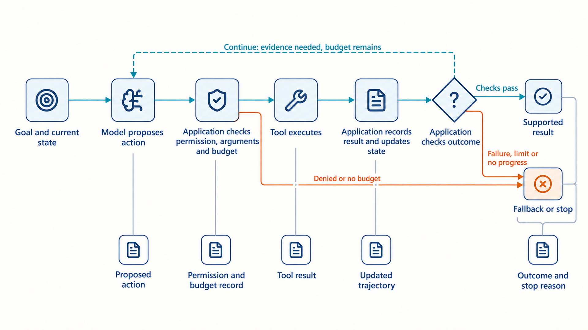

9 Controlled tool use by agents
Suppose a search result reveals that a question needs a second source, but the useful search is unknown until the first result arrives. A fixed workflow can handle known branches, as Chapter 8 showed. The model can choose its next action from what has been observed. The application checks that choice, runs any permitted tool, records its result, and decides whether to continue. Input schemas, permissions, budgets, and stop checks control different parts of that cycle.
![Six groups cover Sections 9.1 to 9.12 and query revision, routing and decomposition in 9.9.1. A model proposes an action, a permission and budget check controls execution, and an outcome check leads to a supported result or another cycle. Denial, exhausted budget or repeated results can stop the run. A checked session checkpoint restores the run and is not a user profile. A typed support-data request produces a limited preview and a full-set reference for an authorized count. Code runs in a restricted sandbox and its host checks the result. An MCP server returns results to its host and client. Connected actions need permission and any required approval. Retrieval grades evidence, rewrites a weak query for another retrieval within budget, or ends with an evidence gap. Fresh trials record outcomes, reliability and all step costs, including failed and retried steps. Numerical results are illustrative.](../assets/fig-m1-c09-f01.png)
A local loop can call ordinary functions. CodeAct lets a permitted task run code, MCP connects separately managed tools, and adaptive retrieval retries weak evidence. Saved session state supports recovery; repeated trials measure outcomes, reliability, and cost. The trial counts and results in this chapter are illustrative.
9.1 Agent action loop
A workflow can contain model calls without giving the model control over their sequence. An agent is a system in which a model selects some next actions toward a goal after observing the current state. Application code still validates and executes permitted actions and enforces budgets and stopping rules. Autonomy describes which next-step choices the model controls. A basic loop is goal, reason or decide, act, observe, then stop or repeat.
In one cycle, the model requests a search, the application checks the tool name, query, permission, and remaining budget, and the search tool returns evidence or an error. The application records that result and updates the current state. It ends the run when the answer meets the task’s checks or a stop condition applies. Otherwise, the model receives the new state before choosing again. Only a continuation decision starts another cycle. A completed outcome ends the run.

The stop decision belongs to the application’s control loop. Without a success check, iteration cap, or budget, the loop can continue until context or money is exhausted.
Action: A proposed operation, including tool execution, clarification requests, subtask delegation, or terminal responses.
Observation: The environment result returned after an action, such as tool output, error, updated state, or user response.
Trajectory: The ordered record of model decisions, tool calls, observations, and state changes in one trial.
In a controlled agent, the state contains the goal, selected evidence, prior observations, remaining budgets, and relevant policy.
The application records the source of each observation and accepts an observation only from the executed tool or environment, not from model-generated text. Each record retains the tool identity, normalized arguments, authorization context, result status, and relevant version. Agent evaluation can then distinguish an incorrect model decision from a tool failure, stale cache, authorization denial, or invalid state transition.
9.2 Agent tool interfaces
An agent chooses its next action from the capabilities that the application makes available. Ambiguous names, overlapping descriptions, or untyped parameters can make tool selection unreliable. A tool specification describes a capability’s purpose, inputs, outputs, errors, effects on stored data or other systems, and required permission. The model uses that description to choose a tool, while application code validates the proposed call before execution.
Tool descriptions identify the questions each tool can answer, the meaning and units of its parameters, and the expected result fields. Two nearly identical descriptions leave the model with little basis for choosing between them. Tool-selection tests can compare whether combining or separating those capabilities reduces errors without removing a needed operation.
| Tool definition element | Question it answers | Application check |
|---|---|---|
| Name and purpose | Which capability does this tool provide? | No confusing overlap with another tool |
| Typed arguments | What exact inputs are required? | Schema, ranges, identifiers, units, and defaults |
| Result schema | What does the tool return? | Stable fields, source details, and explicit errors |
| Side effects | What external state can change? | Authorization, approval, idempotency, and audit log |
| Failure behavior | What should happen on timeout or invalid state? | Retry policy, fallback, and user-visible message |
The following Python fragment uses synthetic customer-support requests from the Bitext dataset. Each row contains a request and an intent label such as get_refund.1 A direct count_by_intent tool could answer a count question in one call. This two-tool example shows one call passing a result reference to the next. The same stored set can supply counts or examples. It costs an extra call and needs temporary server storage. Section 9.12 develops the case.
See Example 9.1 for the implementation.
Example 9.1: A typed data tool states its scope and returns a controlled observation.
The fragment uses BaseModel and Field from Pydantic v2 to describe call arguments. The application supplies DATASET, current_user, authorized_rows, result_store, and InvalidToolArgument. Dataset metadata contains the allowed intent names in DATASET.valid_intents and a version in DATASET.version. authorized_rows checks the caller and returns every row that caller may read. The store keeps filtered IDs together with caller, version, and intent, and rejects unknown references, unauthorized callers, or stale versions with typed errors. A wrapper validates arguments into IntentFilter or CountRows, calls the plain function, and converts its expected errors into tool results.
filter_by_intent returns a limited preview and an opaque reference, an identifier the model passes back without interpreting it, for the complete filtered set. A public call count_rows(rows=row_ref) is converted to CountRows(rows=row_ref) before the function runs. It returns the exact count and version. Unknown intents fail in the filter. A valid intent with no authorized matching rows returns an empty preview and a reference whose count is zero. Neither function changes the dataset, although filtering writes a temporary result record.
class IntentFilter(BaseModel):
intent: str = Field(description="Exact Bitext intent name.")
limit: int = Field(default=20, ge=1, le=100)
class CountRows(BaseModel):
rows: str = Field(description="Opaque row_ref returned by filter_by_intent.")
def filter_by_intent(args: IntentFilter) -> dict:
"""Return a full-set row reference and at most `limit` preview rows."""
rows = authorized_rows(DATASET, current_user)
if args.intent not in DATASET.valid_intents:
raise InvalidToolArgument("Unknown intent for this dataset version.")
filtered = [row for row in rows if row["intent"] == args.intent]
row_ref = result_store.store_filtered_ids(
row_ids=[row["row_id"] for row in filtered],
caller_id=current_user.id,
dataset_version=DATASET.version,
intent=args.intent,
)
return {"row_ref": row_ref, "preview": filtered[:args.limit]}
def count_rows(args: CountRows) -> dict:
"""Return the exact count for an authorized, current filtered reference."""
result = result_store.load_filtered_ids(
args.rows, caller_id=current_user.id, dataset_version=DATASET.version
)
return {
"count": len(result.row_ids),
"dataset_version": result.dataset_version,
"intent": result.intent,
}The wrapper constrains argument form, while authorized_rows and the result store enforce access outside the model. The preview limit restricts the number of rows returned, not their byte or token size. A production wrapper must also cap individual field sizes and the complete response. The limit does not change the complete filtered set behind row_ref. The model passes that reference to count_rows and receives the count, dataset version, and intent without receiving all matching rows.
9.3 ReAct with explicit budgets
The tool specification describes available actions, argument schemas, and expected results. One response cannot solve a task whose next step depends on evidence returned by an earlier tool action.
- ReAct: An agent-control pattern that interleaves reasoning, actions, and environment observations so a later decision can use the latest result.2
Classic ReAct writes Thought, Action, and Observation in a text trace. The model emits reasoning and an action expressed in that text format. The application executes the action and appends the actual observation. Modern function calling can instead represent the action as typed data and keep private reasoning internal. Both representations let the next decision use the latest result. Authorization and budgets are additional application controls, not guarantees of ReAct itself.
The model must not fabricate the observation. The application is the only component allowed to place a validated tool result into the trace.
The source notebook’s prompt requests the current leader of a changing model leaderboard. A model may answer from stale training data. Its wikipedia_search tool demonstrates the search-observe cycle, but a Wikipedia summary may omit the current ranking or its date. The adapted loop below must return insufficient evidence unless the result supports the requested fact and its freshness. A production version of this task needs the current leaderboard’s own dated record, not just any returned search text.
See Example 9.2 for the implementation.
Example 9.2: The notebook loop gives the application control after every model decision.
This Python fragment keeps the notebook’s text-action format rather than implementing provider-specific function calling. The harness supplies SYSTEM_PROMPT, call_llm, parse_action, parse_final_answer, wikipedia_search, and validate_final_answer. The model helper returns a string or raises ModelCallError. The parsers return a nonempty answer or search query, or None, and reject other tool names. The search adapter returns a dictionary with ok, text, and source/date fields, or raises ToolCallError. An error result has ok=False. The validator checks the answer against the separately recorded successful observations, including source and freshness, and returns a boolean. The function returns a supported answer or an explicit stop message. Search reads external data but does not change it.
def run_agent(question, max_steps=6):
if not isinstance(question, str) or not question.strip():
return "Invalid question."
if type(max_steps) is not int or max_steps < 1:
return "Invalid step limit."
messages = [
{"role": "system", "content": SYSTEM_PROMPT},
{"role": "user", "content": question},
]
observations = []
for step in range(1, max_steps + 1):
try:
output = call_llm(messages)
except ModelCallError:
return "Model call failed."
if "Observation:" in output:
return "Model-generated observation rejected."
answer = parse_final_answer(output)
if answer is not None:
if not observations:
return "Insufficient evidence: no successful tool observation."
if validate_final_answer(answer, observations):
return answer
return "Final answer was not supported by current evidence."
argument = parse_action(output)
if argument is None:
return "No valid action was produced."
try:
observation = wikipedia_search(argument)
except ToolCallError:
return "Search tool failed."
if not observation.get("ok") or not observation.get("text", "").strip():
return "Insufficient evidence: search failed or returned no text."
observations.append(observation)
messages.append({"role": "assistant", "content": output})
messages.append({
"role": "user",
"content": "Tool observation (external data): " + observation["text"],
})
return "Max steps reached."The application stores model text and search output in separate messages and keeps the executed results in observations for validation. The external-data message uses the user role only as a notebook-format adapter. Production function calling uses the provider’s tool-result format and tool-call identifiers. Model text containing an Observation: marker is rejected, and it cannot enter the validator’s evidence list. A returned observation can still contain misleading information or injected instructions, so origin tracking alone does not make it trustworthy.
max_steps limits model decisions, including the final-answer decision. With a limit of one, a search may run but no later decision can answer from it. Empty questions and invalid limits stop before a model call. Expected model or tool failures stop with a status, and failed or empty search output cannot support an answer. The helper implementations still need their own timeouts and error contracts. This fragment has no automatic retries, complete token or cost budget, or production authorization system.
9.4 Safe stopping and loop detection
A well-described tool can still be called repeatedly without progress. An exploratory loop can repeat the same search, alternate between tools without progress, or pursue an impossible objective. Budgets and stop conditions bound iterations, tokens, time, money, tool calls, and side effects independently of the model’s confidence.
Repeated actions call for progress checks and iteration caps. Excessive history may need context compaction, which can lose details. Confused tool selection calls for interface tests or tool redesign. Parallel dispatch addresses independent work that is waiting in sequence, not a loop that keeps choosing the same action.
Iteration budgets cap decision-action cycles. Token budgets constrain cumulative input and output volume across the trajectory. Tool budgets limit call counts and dispatch rates. Before starting a call, the application checks the remaining allowance and reserves its permitted maximum cost or token use. It updates the allowance with measured use after completion. A wall-time limit also needs deadlines, tool timeouts, and cancellation. Otherwise one stalled call can outlast the whole run’s intended limit.
Side-effect limits restrict write actions. Human authorization is required before execution when policy or the action’s risk demands it. Permission checks and response-size limits still apply to read-only calls. These controls complement budgets: a cheap action can expose unauthorized data, and a successful task can still include a prohibited action. Counters updated only after an observation cannot stop an action that has already exceeded its allowance or changed external state.
A stop condition determines when the loop terminates. Valid termination conditions include task success, a validated final answer, repeated state detection, and budget exhaustion. When a task cannot be completed, the system should return a structured fallback explaining completed observations and unresolved blockers.
Loop detection
Loop detection compares recent actions and the state relevant to the next decision. Normalization excludes incidental timestamps but must retain source versions and environment changes that affect the next action. An unchanged repeated search with no new evidence can trigger a stop. A retry after a transient failure or updated source is a different case and needs its own retry allowance. Normalization that drops those changes can stop a useful run too early.
Each terminating run ends with a specific outcome. Success requires the task’s outcome and policy checks to pass. A confident message alone does not establish completion. Other terminal states include insufficient evidence, unsupported scope, authorization failure, recoverable tool failure, exhausted budget, and human escalation. Typed outcomes make fallback behavior measurable and prevent a loop from reporting repeated activity as progress.
The bounded action loop is the baseline for planning and coordination in Chapter 10. A separate plan or another agent still needs these progress, permission, and stopping checks.
9.5 Session state and recovery
An agent trajectory stores messages, actions, observations, and graph state for one run. A follow-up or process restart may need that state again, but session recovery does not justify copying the thread into persistent cross-session memory. A workflow checkpoint restores one thread. This is saved execution state, not the saved model version that Chapter 1 called a checkpoint. Chapter 11 covers how selected information may cross sessions through a separate memory lifecycle.
LangGraph runs workflows as graphs whose steps read and update the workflow state described in Section 8.2. A workflow checkpoint stores graph state for one thread or session under an identifier. InMemorySaver keeps that state only while the process runs. A durable saver backed by SQLite or Postgres can preserve it across process restarts under application control.3
This Python fragment assumes the application compiled graph with a checkpointer and a message-state update rule such as MessagesState or add_messages. That rule appends new messages or updates matching message IDs. Without it, a new messages value replaces the old list. The application imports HumanMessage, which wraps the current user text, and maps the authenticated caller’s conversation to a stable session_id. LangGraph uses thread_id inside configurable to select saved state. Knowing that identifier does not grant permission to read the conversation, so the application must check access before this fragment runs.4
Example 9.3: A thread identifier selects saved state when a checkpointer is configured.
config = {"configurable": {"thread_id": session_id}}
result = graph.invoke(
{"messages": [HumanMessage(content=user_text)]},
config=config,
)With those settings, a later call using the same session_id loads that thread’s saved state and applies the new message. A different identifier selects another thread. graph.invoke returns the updated graph result. Restart recovery also needs the same durable database and compatible graph state. Retention rules may delete older state, and saver or graph failures must be reported rather than presented as a recovered conversation. The fragment does not create or update a separate user profile.
9.6 CodeAct: compound work in a sandbox
Typed function calls are effective when each action maps to one limited capability. A task that combines loops, conditionals, local variables, and libraries can require many separate calls and observations. Wang et al.5 describe CodeAct, in which one executable program can combine those operations. It can still run inside a loop that returns execution results to the model. Because the code runs, the system must isolate it and limit its time, memory, filesystem, and network access.
The hard requirement is isolated execution with a deliberately small capability set. The generated program is untrusted input even when the model is normally reliable. The NIST Application Container Security Guide6 explains container isolation and its limits. A container alone does not prevent every kernel escape, secret exposure, unsafe mount, network path, resource attack, or harmful use of accepted output.
CodeAct
This method applies to computational subtasks expressible as code over explicitly mounted data and approved libraries. It is useful when a compact program replaces many repetitive tool calls or performs deterministic data analysis.
The model writes a program, an isolated runtime enforces time, memory, network, filesystem, and output limits, and captured results return as an observation.
Primary limits: Code execution must account for sandbox escapes, nondeterministic dependencies, oversized outputs, hidden side effects, and the cost of reviewing every allowed input and operation.
| Sandbox control | Question it answers | Example policy |
|---|---|---|
| Filesystem | What may the program read or write? | Read-only input mount and a writable temporary output directory only |
| Network | Which external systems may it contact? | Disabled by default or restricted to an allowlist |
| Resources | How much compute can it consume? | Wall-time, CPU, memory, process, and output-size limits |
| Secrets | Which credentials are visible? | No ambient credentials, only short-lived scoped tokens |
| Outputs | How are outputs accepted? | Output type, size, malware risk, and destination checks |
Example 9.4: A sandbox accepts one program and blocks another
Assume the runtime mounts a read-only /input/orders.csv, permits writes only under /output, and disables network access. An allowed program reads three intent values and counts the two get_refund rows. It writes {"refund_count": 2} to /output/result.json. The runtime returns exit status 0 and the output-file reference. The host then checks the JSON fields and value types before using the count.
A second program tries to make an HTTP request. The sandbox rejects that call because network access is disabled, returns a policy error, and produces no network side effect. The trace records the program, mounted paths, limits, exit status, and accepted or rejected output. These are expected outcomes under the stated policy, not a claim that the programs were run for this book.
Sandboxing controls generated code executed by one application. When approved capabilities live in other processes or services, the next design problem is how a host discovers and calls them. The host still checks who may use each capability. Section 9.7 introduces a shared protocol for those exchanges.
9.7 MCP: connecting tools and services
The action loop can use ordinary functions in the same process. When several applications and services change independently, each application may need different adapter code for each service. In a fully connected setup with N host applications and M services, that can mean N x M custom integrations.
- Model Context Protocol (MCP): A client-server protocol through which an AI host discovers server-provided tools, resources, and prompt templates and invokes them through shared message formats.
With MCP, the host receives a server’s capability list, checks it against host policy, and invokes an allowed tool through the protocol. The protocol does not decide whether a caller may use that tool or whether a proposed action is safe.

For N hosts and M services, shared message rules allow each host to implement MCP client support and each service to expose an MCP server, moving custom integration code toward N + M protocol implementations. This is a count of reusable implementations, not live connections. If every host uses every server, there can still be N x M client-server connections. MCP does not require a central hub. Authentication, service-specific behavior, version compatibility, and maintenance still need separate work.
The host is the application that manages model interaction and controls which data and actions the user permits. A Client is the host’s protocol component that connects to one MCP server and exchanges messages with it. The host creates one client instance for each server it uses. In the 2025-11-25 architecture, each client maintains its own session with one server.7 The figure’s star is a logical integration view: its central document represents shared message formats, not a server or gateway. Its dashed lines do not show runtime connections. Each host’s client support can create the separate client instances needed for its servers.
A server exposes capabilities backed by a database, API, filesystem, or another system. Through the matching client, the host requests available tools and the server returns each tool’s name, input schema, and description. The host checks the server and tool against policy before exposing the tool to the model or presenting an approval request. The model proposes a call, the host permits and sends it through the client, and the server runs or rejects the operation and returns its result.
Local stdio transport runs the server as a local process and avoids a network connection for the protocol exchange. It does not prevent that process from opening its own network connection. A remote transport needs authentication, authorization, and connection handling appropriate to the service.
- Confused deputy: A security failure in which software with legitimate authority is tricked into using that authority for a caller or purpose that was not approved. The table below lists this risk for tools. Section 9.8 explains the corresponding audience, resource, scope, and user-intent checks.
The table compares what MCP servers offer or request, their intended interaction roles, and their main risks in a controlled host design.8 These roles do not mandate one user interface or interaction pattern. Host authorization remains an application requirement.
| Primitive | Controller | Purpose | Typical risk |
|---|---|---|---|
| Tool | Model proposes, host authorizes, server executes | Perform a typed action that may have side effects | Confused-deputy action or excessive permissions |
| Resource | Application or host | Read identified data into context | Sensitive-data exposure or prompt injection |
| Prompt | User chooses through the host | Invoke a server-supplied interaction template | Misleading scope or stale instructions |
| Sampling | Server requests, and the host mediates | Ask the host model to perform a completion | Unexpected model use, cost, or data flow |
| Roots | Host advertises | Tell a server the relevant filesystem roots | An overly broad scope increases possible harm, and access control remains separate |
| Elicitation | Server requests, and the user answers | Obtain missing information during execution | Social engineering or ambiguous consent |
The agent loop need not change when the transport changes. That separation is useful only if tool identity, permissions, errors, and source information remain visible in traces.
The next example filters discovered tools before creating the agent.
This abbreviated async Python example assumes an authenticated discovery adapter, a policy object, and an application-supplied create_agent. The adapter’s get_tools method returns normalized tool records, including a server_id set from the authenticated connection and an input_schema. These are this example’s adapter fields, not a promise that every MCP library returns that object. It returns an agent whose tool list contains only allowed discovered tools. An empty or fully rejected list creates an agent with no tools. Discovery or policy exceptions stop construction. The host checks authorization again before each invocation, because discovery approval alone does not grant permission for every argument or future call.
Example 9.5: A host keeps capability discovery separate from agent execution.
async def build_agent(client, model):
discovered = await client.get_tools()
allowed = [
tool for tool in discovered
if policy.allows_server(tool.server_id)
and policy.allows_schema(tool.name, tool.input_schema)
]
return create_agent(model=model, tools=allowed)FastMCP is a Python library for writing an MCP server. It is an implementation aid, not the MCP protocol itself. The fixed documentation version9 explains how its decorator reads a Python function’s parameters and type annotations to create a JSON input schema. Its default validation may coerce values such as "4" into an integer. The example enables strict input validation to reject such a type mismatch before the function runs. Schema validation does not decide which records the function may read or which changes it may make.
See Example 9.6 for the implementation.
Example 9.6: FastMCP exposes support tools while keeping approval checks in the application.
This abbreviated server example assumes the two stores and search helper enforce their own access rules and return only allowed fields. Each function rejects an empty identifier, query, or reason. search_policy limits the requested result count to between one and eight. The functions return records, search results, or a draft and never submit that draft. The server adapter must turn input or access failures into tool error responses. This listing does not implement caller authentication or that error conversion. The application alone may submit a draft after approval.
from fastmcp import FastMCP
mcp = FastMCP(name="support-tools", strict_input_validation=True)
@mcp.tool
def lookup_ticket(ticket_id: str) -> dict:
"""Read allowed fields for one ticket, without changing it."""
if not ticket_id.strip():
raise ValueError("ticket_id must not be empty")
return ticket_store.read_public(ticket_id)
@mcp.tool
def search_policy(query: str, top_k: int = 4) -> list[dict]:
"""Search allowed policy records and return at most eight results."""
if not query.strip():
raise ValueError("query must not be empty")
if type(top_k) is not int:
raise ValueError("top_k must be an integer")
limited_k = min(max(top_k, 1), 8)
return policy_search(query, top_k=limited_k)
@mcp.tool
def draft_escalation(ticket_id: str, reason: str) -> dict:
"""Create a draft only, for a ticket the caller may access."""
if not ticket_id.strip() or not reason.strip():
raise ValueError("ticket_id and reason must not be empty")
return escalation_store.create_draft(ticket_id, reason)The decorator exposes schemas and documentation, while the underlying stores and search helper enforce the source system’s access policy. The names read_public and create_draft express required helper behavior, not checks supplied by the decorator. The server record needs both the FastMCP package version and the MCP protocol version because both can change over time. The example follows the cited fixed documentation and was tested with store and registration stand-ins, not a running FastMCP server.
9.8 Permissions and trust for connected tools
A standard protocol makes a connection consistent, but it does not make the connected server or its outputs safe. Tool descriptions and returned documents are untrusted data. A malicious document can contain instructions intended to redirect the model, and an overly broad credential can let an otherwise valid call perform actions the user did not permit.
The MCP Security Best Practices guide describes an OAuth proxy consent attack under the confused-deputy problem and a separate session-hijack prompt-injection attack that inserts malicious events into a session.10 Host applications treat retrieved tool output as untrusted data, keep system policy separate from that data, and validate every resulting tool action against policy outside the model’s text. The host also requires explicit consent where applicable, verifies caller identity, and supplies only the minimum permission scope.
High-impact actions, including file deletions and financial transfers, need a user-authorized policy and explicit human approval when that policy requires it. A previously approved scheduled write need not request fresh consent for every run, but it must remain within its approved scope. Credentials should follow the principle of least privilege. In protocol versions that provide roots, roots communicate relevant filesystem scope but do not enforce access control or create a sandbox. The host must still restrict actual file access and use short-lived, resource-scoped credentials rather than system-wide secrets. Pinned server package versions limit supply chain drift, and the host records tool discovery, arguments, approvals, and outcomes in an audit trail.
Dated supplement: MCP transport and authorization rules (MCP 2025-11-25)
The MCP 2025-11-25 Transports11 specification lists stdio and Streamable HTTP as standard transports. A local stdio client launches the server process and exchanges newline-delimited messages. JSON-RPC is the JSON message format used for requests, responses, and notifications that need no response. Streamable HTTP uses an HTTP endpoint and needs origin validation, authentication, and careful session handling. The transport changes network exposure and credential handling, not what a tool means or whether the host should permit the action.
The following user-delegated OAuth authorization-code flow has four actors and one credential:
- User or resource owner: The person who grants permission.
- Client: The MCP client acting for the AI host that asks to use a capability.
- Authorization server: The system that verifies the user and issues a limited credential.
- Access token: The credential that grants limited access.
- Resource server: The MCP server that checks the token before serving the requested capability.
For HTTP authorization, the MCP 2025-11-25 Authorization12 specification uses OAuth, an authorization protocol that lets a user allow a client to call a service with a limited token instead of sharing the user’s password. The client asks for a token intended for one MCP server, and that server checks that the token’s audience identifies it. An MCP proxy must not pass the received client token unchanged to a downstream API, because that API is a different recipient. If that API uses OAuth authorization, the proxy obtains a separate token intended for it.
PKCE, short for Proof Key for Code Exchange, protects an authorization-code flow by binding the code to a secret verifier stored by the requesting client. Before the user signs in, the client creates a secret verifier and sends a derived challenge. In the S256 method required when technically possible by the MCP 2025-11-25 authorization specification, the challenge is the base64url encoding of the SHA-256 hash of that verifier. After the authorization server returns a code, the client presents the original verifier. The authorization server derives the challenge again and compares it with the saved value before exchanging the code for a token. A copied code alone is not enough for an attacker to pass that check. Audience checks, short-lived tokens, PKCE where an authorization-code flow is used, and per-client consent reduce misuse of a user’s authority. They do not prove that the resulting tool action matches the user’s intent.
The audience rule follows RFC 8707, Resource Indicators for OAuth 2.013, and the verifier and challenge flow follows RFC 7636, Proof Key for Code Exchange by OAuth Public Clients14. These standards support the authorization mechanisms, while the application still decides whether the requested action matches the user’s approved intent.
![The host and MCP client request user consent and obtain an access token with audience MCP server. The client-presents-token connector ends on the MCP server's left edge, where audience and scope are checked. If the API uses OAuth, the MCP server requests a separate token from the downstream API authorization-server role; its issued token has audience downstream API and is presented by the MCP server to that API. A crossed-out path prohibits passing the incoming token through. These are protocol roles, not a requirement for separately deployed issuer products.](../assets/fig-m1-c10-f09.png)
A valid protocol message does not prove that the requested action is authorized. The host checks each proposed action against the user’s approved intent. The client presents a token intended for the MCP server, and the server checks its audience, scope, and access policy before executing or rejecting the operation.
Dated supplement: elicitation and consent (MCP 2025-11-25)
The MCP 2025-11-25 Elicitation15 specification lets a server request missing information from the user through the host. In form mode, a server sends elicitation/create with a response schema. The host identifies the requesting server, displays the requested fields to the user, and returns an accept, decline, or cancel response.
This application requires the host to authenticate requesting servers, clarify needed inputs, allow user cancellation, and validate response schemas. Some of these checks are protocol recommendations (SHOULD). This host requires all four.
Under MCP 2025-11-25, servers must not use form mode to request passwords, API keys, access tokens, or payment credentials. Servers must use URL mode for interactions involving those secrets or credentials, so they are entered on an external page rather than sent through the MCP client. The server must bind the interaction to the authenticated user. The host must show the requesting server and the full URL, and obtain user consent before opening it.
Current comparison: MCP 2026-07-28
The MCP 2026-07-28 Specification16 defines stateless, self-contained requests and negotiates capabilities for each request. Its Authorization17 specification remains optional and transport-specific for HTTP. A stdio server obtains credentials from its environment rather than this HTTP flow. The current Roots18 specification marks roots as deprecated and continues to describe them as scope information, not access control. The same revision also deprecates sampling and logging.19 The 2025-11-25 examples above apply when implementing that version. Their details are not timeless protocol behavior.
After those protections are specified, the remaining choice is whether separately managed hosts and services benefit from shared discovery and call formats:
| Reasons to start with direct tools | Reasons to evaluate MCP |
|---|---|
| One application manages the tools in the same repository. | Capabilities must be shared across multiple hosts or agent frameworks. |
| Latency and end-to-end traces are critical. | Separately managed servers need shared discovery and call formats. |
| Schemas and implementation change together. | Independent discovery, versioning, and capability changes have real value. |
| The integration count is small and explicit. | The pairwise N x M integration problem is already measurable. |
9.9 Adaptive retrieval and evidence checks
Chapter 7 localized RAG failures by checking retrieved evidence, claim support, and answer relevance. One-shot retrieval still stops after the first query even when its evidence is insufficient. Agentic retrieval checks those first results, then rewrites the query or selects another search method up to a fixed attempt limit.
A one-pass RAG system can rewrite the user’s question before searching, but it still has no retrieval retry if that search misses needed evidence. Vague language, multi-hop questions, corpus mismatch, and ambiguous entity names can cause a miss. Agentic RAG adds decisions about where to search and whether further retrieval is useful, so the system can route, inspect, rewrite, decompose, and stop.
- Agentic RAG: A retrieval-augmented system in which an agent chooses and iterates retrieval actions from observations, within a bounded recovery loop.
If the source is accessible and indexed or searchable, a recovery path can recognize insufficient results and change the next retrieval action. Rewriting cannot recover a fact absent from the allowed sources, repair failed parsing, or bypass access policy. A larger embedding model is a separate option when ranking quality, rather than missing data or control, caused the failure.
Iterative retrieval
This method applies to queries whose first retrieval may be noisy, incomplete, or expressed with the wrong vocabulary. It is useful when the system can cheaply inspect relevance and try a bounded number of refined searches.
The pipeline retrieves candidates and inspects their evidence quality. When the evidence is insufficient, it reformulates the query while preserving entities, dates, user constraints, and access scope. It generates an answer only after meeting the evidence-sufficiency rule. Trivedi et al.20 study IRCoT, a retrieval method that alternates retrieval with reasoning on multi-step questions. Jiang et al.21 study FLARE, a retrieval method that uses low-confidence predicted answer text to trigger retrieval during generation. Both report gains on their evaluated tasks. Neither is the exact retrieve-grade-rewrite loop in the retrieval-recovery example.
Primary limits: Each retrieval attempt adds latency and cost. An inaccurate evidence grader can trigger unnecessary retries, reformulation can drift from the question, and a missing attempt budget can leave the loop open ended.
The retriever is a separate choice from whether searches are retried. Exact search fits known symbols, identifiers, error strings, and text that may change before a vector index is rebuilt. BM25 uses weighted lexical matching and fits keyword-rich corpora. Dense embeddings can help with conceptual paraphrases, and with cross-language questions when the embedding model supports those languages. SQL or an API fits structured filters and aggregates. An agent can route among these methods, and hybrid retrieval can combine lexical and dense results as in Section 6.5. Evaluation compares their precision and cost on labeled questions rather than assuming one method always performs best.
| Retriever | Signal | Strength | Failure to watch |
|---|---|---|---|
| Exact search | Literal or regular-expression match | Precise symbols, IDs, logs, code, and fresh text | Low recall when wording changes |
| BM25 | Weighted lexical overlap | Keyword-rich documents without dense-index complexity | Vocabulary mismatch and weak semantics |
| Dense retrieval | Vector similarity | Conceptual or paraphrased questions | Plausible but irrelevant neighbors and index staleness |
| SQL or API | Typed fields and operators | Counts, filters, joins, and authorized live state | Invalid query generation or excessive access |
Chapter 7 separated retrieval relevance from answer faithfulness. The next design question is where control should intervene when evidence is missing. Iterative refinement retries one route, routing selects a route before retrieval, and decomposition creates multiple evidence subproblems.
The patterns may be combined, but each additional branch or loop needs a budget, saved state, and evaluation cases. Decomposition creates subquestions before retrieval. Independent subquestions can run in parallel, but a subquestion needing an earlier answer must wait for it. For example, finding a country’s capital and then that capital’s population creates a real dependency. When another attempt cannot add authorized evidence, the system returns an evidence-gap result. Identity, date, and access constraints must remain in force even if broadening them would produce a result.
| Pattern | Decision | Good trigger | Required evaluation |
|---|---|---|---|
| Iterative refinement | Are current results sufficient? If not, how should the query change? | First-hit misses, vague phrasing, changing terminology | Attempts, recovery rate, drift rate, latency, and supported-answer rate |
| Routing | Which evidence system should answer this query? | Distinct semantic, exact, structured, or policy corpora | Route accuracy, fallback behavior, per-route quality, and access policy |
| Decomposition | Which subquestions and dependencies produce the answer? | Multi-hop or comparison questions | Subanswer correctness, dependency validity, merge faithfulness, and total cost |
The final example supplies retrieval, grading, and rewriting steps for a budgeted workflow. It does not build the graph that orders those steps.
See Example 9.7 for the implementation.
Example 9.7: A bounded state machine retries retrieval until the evidence suffices or the attempt budget ends.
This abbreviated Python example assumes the retriever, grader, and rewrite helper are application-supplied. The workflow validates a nonempty question and query, an allowed route, a positive integer max_attempts, and a nonnegative integer attempts before entry. retrieve_step, grade_step, and rewrite_step return updated state. One attempt is one retrieval call, not one visit to each node. add_attempt increments the count, retains the query and returned documents, and clears the previous grade. with_query also clears that grade. These resets stop an old sufficient grade from approving newly retrieved evidence.
The surrounding graph must call retrieval before grading, then route from the resulting grade. The functions do not themselves reject grading an initial state with zero attempts, so arbitrary direct calls are not a safe execution order. After a rewrite, the graph returns to retrieval rather than grading the previous documents again.
route_after_grade returns generate, insufficient_evidence, or rewrite. A grade must be recorded before routing or rewriting. Sufficient evidence on the last allowed attempt can still lead to generation. Insufficient evidence at that limit leads to an evidence-gap result, and retrieval cannot be called again. Retrieval, grading, or rewrite exceptions stop this fragment and need typed failure handling in the surrounding workflow. The rewrite helper must preserve the question’s identity, date, and access constraints.
def retrieve_step(state):
if state.attempts >= state.max_attempts:
raise ValueError("retrieval attempt budget exhausted")
docs = retriever_for(state.route).search(state.query)
return state.add_attempt(query=state.query, docs=docs)
def grade_step(state):
verdict = evidence_grader(state.question, state.latest_docs)
return state.with_latest_grade(verdict)
def route_after_grade(state):
if state.latest_grade is None:
raise ValueError("retrieval must be graded before routing")
if state.latest_grade.sufficient:
return "generate"
if state.attempts >= state.max_attempts:
return "insufficient_evidence"
return "rewrite"
def rewrite_step(state):
if route_after_grade(state) != "rewrite":
raise ValueError("state does not permit another query")
query = rewrite_using_failure_reason(
original=state.question,
previous=state.query,
reason=state.latest_grade.reason,
)
if not isinstance(query, str) or not query.strip():
raise ValueError("rewrite returned an empty or invalid query")
return state.with_query(query)Stopping is part of retrieval quality
When the evidence budget is exhausted, the correct output may be an evidence-gap response. Requiring a factual answer despite missing evidence can produce unsupported claims.
9.10 Task outcomes and trial records
An agent introduces variable trajectories, tool behavior, and environment state beyond one model response. One successful trace cannot establish reliability, and grading one preferred path can reject valid alternative strategies. AgentBench22 demonstrates that results can differ across interactive environments, so one benchmark cannot replace tests of the product’s own tasks and tools. Agent evaluation separates tasks, trials, transcripts, verified final states, graders, reliability, cost, and latency before comparing system versions. The Tau-bench23 study grades final database state across repeated tool-agent-user trials. It is a benchmark with defined domains and simulator assumptions, not a universal release protocol.
An agent harness runs the model/tool cycle. An evaluation harness runs task trials and grades each outcome. It records each trial and combines the scores. An agent evaluation measures the model and its harness together, not the model alone.24
For a task that changes records, the grader checks the authoritative final environment state. For a read-only count or summary, it checks the returned answer against the authorized dataset or selected evidence. Policy checks must also inspect actions that were prohibited even if their effects were later reversed. A final message that sounds successful does not establish any of these properties.
See Example 9.8 for the implementation.
Example 9.8: Repeated trials use fresh state and grade the durable outcome.
This Python fragment assumes task supplies an ID, prompt, and outcome-and-policy grader. agent_factory creates a fresh agent for each seed, and fresh_sandbox resets files, data, and caches. A supplied TrialExecutionError carries result, containing the partial transcript, incurred cost, and elapsed time when an agent run fails. The harness still snapshots and grades that run, then continues with fresh state. Sandbox setup, snapshot, or grader errors abort the batch: their results cannot be counted as valid trials until the evaluator is repaired. A positive integer trial count is required. The returned records contain one transcript, outcome, grade, execution-error status, cost, and latency per completed evaluation. Nothing is promoted into a user profile.
def run_trials(task, agent_factory, trials=20):
if type(trials) is not int or trials < 1:
raise ValueError("trials must be a positive integer")
records = []
for seed in range(trials):
sandbox = fresh_sandbox(task, seed)
execution_error = None
try:
result = agent_factory(seed).run(task.prompt, sandbox)
except TrialExecutionError as failure:
result = failure.result
execution_error = type(failure).__name__
outcome = sandbox.snapshot()
grade = task.grader(outcome, result.transcript)
records.append({
"task_id": task.id,
"seed": seed,
"transcript": result.transcript,
"outcome": outcome,
"success": grade.success,
"execution_error": execution_error,
"cost": result.cost,
"latency_ms": result.latency_ms,
})
return recordsA fresh sandbox separates trials only if all mutable dependencies, including agent state and caches, are reset. Seeds identify trial settings but do not make a remote model reproducible or prove independence. The grader checks the task’s authoritative result and required policy conditions. ToolSandbox25 shows how stateful evaluation can recognize milestones across valid alternative trajectories. Transcripts reveal route, parser, tool, retry, and stop-condition failures and supply evidence for prohibited-action checks. Repeated reset trials let the evaluator estimate variation that one successful run cannot show.
Trajectory details help diagnose failures. Grading them is also necessary when task or policy requirements concern intermediate actions, access, resource use, or an action sequence. Grading an arbitrary preferred path would reject other valid strategies.
Agent evaluation measures both the final result and the cost and behavior of the run:
- Task success: the required answer or environment state and policy checks pass.
- Cost: token consumption, tool execution fees, reviewer compensation, and hosting infrastructure.
- Latency: complete wall time with p50, p95, and timeout rate.
- Reliability: consistency across repeated trials and relevant slices.
- Trajectory quality: tool selection, errors, retries, and policy events for diagnosis.
9.11 Reliability and trial cost
The recorded outcomes, costs, and timings let the evaluator compare repeated runs rather than one demonstration.
For a positive number \(N\) of trials, let \(s_i\) be one when trial \(i\) meets the task’s outcome and policy checks and zero otherwise. The observed task success rate is:
\[ \hat{p}=\frac{\sum_{i=1}^{N}s_i}{N} \tag{9.1}\]
Here, \(N\) is trial count, \(s_i\) is the binary result for trial \(i\), and \(\hat{p}\) is the observed success frequency. Report an uncertainty interval with the estimate. A Wilson score interval estimates a binomial success probability from a success count and trial count. It assumes independent trials with the same success probability. The textbook normal approximation has poor coverage at small sample sizes and can extend below 0 or above 1.26 If tasks or conditions differ, report those groups separately rather than treating their results as identical trials.
Example 9.9: Repeated agent reliability
Suppose the same task is reset and run independently 20 times under unchanged conditions, with 17 successful outcomes. These are illustrative results.
- Sum the binary success indicators: 17.
- Divide by N = 20: 17 / 20 = 0.85.
- Inspect the three failures by trajectory and final environment state.
Result: Observed task success is 0.85 across these 20 trials.
Interpretation: A 95 percent Wilson interval for 17 successes in 20 trials is about 0.64 to 0.95, so these observations remain compatible with a 70 percent success probability at this confidence level. The score also does not say whether 0.85 is acceptable, nor whether failures cluster around one tool, slice, or latency condition. Report those alongside the rate.
See Example 9.10 for the implementation.
Example 9.10: A success count and trial count give two Wilson probability bounds.
The following runnable Python 3.8-or-later listing reproduces those endpoints using the Wilson formula.27 It takes an integer success_count, a positive integer trial_count, and a numeric confidence between 0 and 1, such as 0.95 for 95 percent. It returns (lower, upper) probability bounds. Invalid counts or confidence values raise ValueError. Zero successes and all-success trials are valid inputs. The calculation still assumes independent trials with the same success probability.
NormalDist from Python’s standard-library statistics module supplies the standard normal cutoff z for the requested confidence level. The calculation adjusts the observed rate to obtain the interval’s center, computes its half_width, then returns the center minus and plus that width. The final limits keep floating-point rounding within 0 to 1. No model calls, external data, or package installation are needed.
from math import sqrt
from statistics import NormalDist
def wilson_interval(success_count, trial_count, confidence=0.95):
if type(trial_count) is not int or trial_count < 1:
raise ValueError("trial_count must be a positive integer")
if type(success_count) is not int or not 0 <= success_count <= trial_count:
raise ValueError("success_count must be an integer from 0 to trial_count")
if type(confidence) not in (int, float) or not 0 < confidence < 1:
raise ValueError("confidence must be a number between 0 and 1")
n = trial_count
observed_rate = success_count / n
z = -NormalDist().inv_cdf((1 - confidence) / 2)
z_squared = z * z
denominator = 1 + z_squared / n
center = (observed_rate + z_squared / (2 * n)) / denominator
half_width = z * sqrt(
observed_rate * (1 - observed_rate) / n + z_squared / (4 * n * n)
) / denominator
return max(0.0, center - half_width), min(1.0, center + half_width)
lower, upper = wilson_interval(17, 20, confidence=0.95)
print((round(lower, 4), round(upper, 4)))For success_count=17, trial_count=20, and confidence=0.95, the listing prints (0.6396, 0.9476). The bounds describe uncertainty in the success probability. Since 0.70 lies inside this interval, 20 trials do not exclude a 70 percent success probability at this confidence level. More trials under the same conditions can narrow the uncertainty. Release decisions also need examination of the failures.
A product may require several consecutive successful runs. Under the simplifying assumption that trials are independent and each succeeds with probability p, all-trial reliability decreases multiplicatively.
\[ R_m=p^m \tag{9.2}\]
Here, \(R_m\) is the probability that all \(m\) runs succeed, \(m\) is a positive integer, and \(p\) is a single-trial success probability between 0 and 1. The equation multiplies conditional success probabilities under the independence and equal-probability assumptions. An observed rate \(\hat{p}\) is an estimate, not a known \(p\). Shared state or changing conditions can break those assumptions. Tau-bench reports pass^k, an all-trials measure estimated per task from repeated trials.28 It differs from pass@k in Section 5.2: pass@k concerns at least one successful attempt, while pass^k concerns success in all k attempts.
Example 9.11: Ten consecutive successful trials
Assume an idealized independent per-trial success probability of 0.95 and require ten successful runs.
- Raise the per-trial probability to the number of required runs: 0.95¹⁰.
- The resulting probability is approximately 0.599.
Result: Even a 95 percent single-trial rate yields only about a 60 percent chance that all ten runs succeed.
Interpretation: All-trial reliability can be much lower than the single-trial rate. Dependence between trials can make the all-success probability higher or lower than this independent model, so release decisions should use measured repeated runs.
Trial cost includes every model and tool step, including failed and retried steps.
\[ C_{trial}=\sum_{t=1}^{T}(r_{in}L_{in,t}+r_{out}L_{out,t}+c_{tool,t}) \tag{9.3}\]
Here, \(C_{trial}\) is the model-and-tool cost of one run, and \(T\) is its number of executed steps. \(L_{in,t}\) and \(L_{out,t}\) are input and output token counts at step \(t\). The rates \(r_{in}\) and \(r_{out}\) are charges per token in the same currency, while \(c_{tool,t}\) is that step’s external-tool charge. Include failed and retried steps. If models or token classes have different prices, use step-specific rates. Across trials, divide total cost, including unsuccessful runs, by the number of successful outcomes. With zero successes, cost per successful task is undefined. Report the total spend and zero successes instead.
Example 9.12: Failed steps in agent trial cost
Suppose an unsuccessful search costs $0.004, its successful retry costs $0.006, and the final answer costs $0.010. These charges are illustrative.
- Add the first two step costs: $0.004 + $0.006 = $0.010.
- Add the final step: $0.010 + $0.010 = $0.020.
Result: The complete trial costs $0.020 before shared infrastructure overhead.
Interpretation: Counting only the successful retry and answer would report $0.016 and miss the failed search’s $0.004. An entirely unsuccessful trial also contributes to total spend when computing cost per successful task.
9.12 Support-data agent controls
A support-data query can request an exact count, examples, or a summary of support requests. Each needs a different result check. The Bitext case from Section 9.2 combines a router, typed dataset tools, graph state, and answer-and-policy validation around the model’s proposed actions. The application records each route, call, observation, and stop reason so failures can be located.
The dataset contains synthetic labeled customer-support requests, not a record of actual customers’ activity. Each row carries request text and an intent label such as get_refund. An exact-label count has a deterministic expected result once the dataset version and authorized rows are fixed. Natural-language routing and summaries still need their own tests and scoring criteria.
The router classifies structured, unstructured, or out-of-scope requests before tool selection. Structured questions use deterministic dataset tools for categories, filtering, counts, examples, and distributions. Unstructured questions use selected rows as evidence for summarization. Out-of-scope questions receive a clear decline with the supported scope and next available route.
Suppose an authorized dataset version contains 27 rows labelled get_refund. This illustrative count is not a measured count of the full Bitext dataset. For How many refund requests are in the dataset?, the example first calls filter_by_intent(intent='get_refund', limit=20). The tool stores the complete filtered IDs and returns {"row_ref": ..., "preview": [...]}. The preview contains at most 20 rows. The next call, count_rows(rows=row_ref), checks the caller and dataset version and returns {"count": 27, "dataset_version": ..., "intent": "get_refund"}. It counts stored IDs rather than preview rows. The model reports the tool’s count instead of computing it. An answer should identify its authorized dataset scope so that 27 is not mistaken for a global count.
A maximum iteration limit returns a fallback if no supported answer is produced. The command-line interface exposes tool calls, results, and stop reasons for debugging without requiring private model reasoning. A durable checkpointer restores session state after restart. A separate profile of selected user facts is an optional feature with its own update and deletion policy in Chapter 11. The source case also exposes tools through FastMCP, a Python library for creating shared tool servers. Sections 9.7–9.8 explain Model Context Protocol (MCP), the server connection, and permissions. Hosting a tool remotely is not required for the action loop itself.
| Component | Input | Output or state | Acceptance evidence |
|---|---|---|---|
| Router node | User question | Supported route label | Golden route set including out-of-scope cases |
| Dataset tools | Typed parameters and authorized data | Authorized rows, counts, or aggregates | Zero-match, access, version, and response-size tests |
| ReAct graph | Route, messages, tool registry | Final answer and trajectory | Max-step fallback and repeated task success |
| Checkpointer | Session ID and graph state | Restored session history | Durable-saver restart and follow-up tests |
| Optional profile store | User ID and validated facts | Curated semantic profile | Correction, persistence, and deletion tests |
Chapter conclusion
The model proposes actions. Application code checks and executes them, manages session state and budgets, and stops the loop. Code execution, remote tools, and retrieval retries need checks suited to their effects. Repeated trials test whether outcomes and policy checks pass consistently. Chapter 10 builds on this execution layer to plan remaining work and coordinate agent loops.
Bitext. (n.d.). Bitext customer-support LLM chatbot training dataset [Dataset]. Hugging Face. Retrieved September 28, 2026, from https://huggingface.co/datasets/bitext/Bitext-customer-support-llm-chatbot-training-dataset. The author’s card describes hybrid synthetic requests and intent labels. The 27-row authorized set in this example is illustrative.↩︎
Yao, S., Zhao, J., Yu, D., Du, N., Shafran, I., Narasimhan, K., & Cao, Y. (2022). ReAct: Synergizing reasoning and acting in language models. arXiv. https://arxiv.org/abs/2210.03629. The paper interleaves reasoning traces with environment actions and observations. The chapter adds typed validation, authorization, and explicit budgets as engineering controls.↩︎
LangChain AI. (2026, June 29). LangGraph persistence documentation (commit
3edafc8c). GitHub. https://github.com/langchain-ai/docs/blob/3edafc8c187b52be4e2196cd0955dda4a7592cba/src/oss/langgraph/persistence.mdx. This version documents thread-scoped checkpoints, cross-thread stores, and in-memory and durable savers.↩︎LangChain AI. (n.d.). Graph API overview: Working with messages in graph state. Retrieved September 28, 2026, from https://docs.langchain.com/oss/python/langgraph/graph-api#working-with-messages-in-graph-state. Message reducers govern whether an update appends to or replaces saved messages.↩︎
Wang, X., Chen, Y., Yuan, L., Zhang, Y., Li, Y., Peng, H., & Ji, H. (2024). Executable code actions elicit better LLM agents. In Proceedings of the 41st International Conference on Machine Learning. PMLR. https://arxiv.org/abs/2402.01030. The paper uses executable code as an action representation and reports task results.↩︎
National Institute of Standards and Technology. (2017). Application container security guide (NIST Special Publication 800-190). https://doi.org/10.6028/NIST.SP.800-190. The guide describes threats and countermeasures across images, registries, orchestrators, containers, and hosts.↩︎
Model Context Protocol. (2025, November 25). Architecture. https://modelcontextprotocol.io/specification/2025-11-25/architecture. The host creates clients with a one-to-one relationship to servers.↩︎
Model Context Protocol. (2025, November 25). Tools. https://modelcontextprotocol.io/specification/2025-11-25/server/tools. Model Context Protocol. (2025, November 25). Resources. https://modelcontextprotocol.io/specification/2025-11-25/server/resources. Model Context Protocol. (2025, November 25). Prompts. https://modelcontextprotocol.io/specification/2025-11-25/server/prompts. Model Context Protocol. (2025, November 25). Roots. https://modelcontextprotocol.io/specification/2025-11-25/client/roots. These feature specifications support the tool, resource, prompt, and roots rows. The Architecture and Elicitation specifications cited in this section support server-requested sampling through the host and requests for user information. Authorization checks and the risk column are application security choices.↩︎
Prefect. (2026). FastMCP tools documentation (commit
0792ac81). GitHub. https://github.com/PrefectHQ/fastmcp/blob/0792ac812c3240a8256d44fbbc01caa97e4cb8cc/docs/servers/tools.mdx. This fixed documentation version shows tool registration and schema creation from Python types.↩︎Model Context Protocol. (2025, November 25). Security best practices. https://modelcontextprotocol.io/docs/2025-11-25/tutorials/security/security_best_practices. The guidance covers consent, authorization, token handling, and confused-deputy defenses for that edition.↩︎
Model Context Protocol. (2025, November 25). Transports. https://modelcontextprotocol.io/specification/2025-11-25/basic/transports. This version defines
stdioand Streamable HTTP behavior.↩︎Model Context Protocol. (2025, November 25). Authorization. https://modelcontextprotocol.io/specification/2025-11-25/basic/authorization. This version defines the OAuth-based HTTP authorization flow and resource-bound token rules.↩︎
Campbell, B., Bradley, J., & Tschofenig, H. (2020). Resource indicators for OAuth 2.0 (RFC 8707). RFC Editor. https://doi.org/10.17487/RFC8707. RFC 8707 defines the
resourceparameter and resource-specific token audience.↩︎Sakimura, N., Bradley, J., & Agarwal, N. (2015). Proof key for code exchange by OAuth public clients (RFC 7636). RFC Editor. https://doi.org/10.17487/RFC7636. RFC 7636 defines the verifier and challenge mechanism for authorization-code interception.↩︎
Model Context Protocol. (2025, November 25). Elicitation. https://modelcontextprotocol.io/specification/2025-11-25/client/elicitation. The specification defines the versioned request and response behavior. The host still has to establish identity, consent, and safe display.↩︎
Model Context Protocol. (2026, July 28). Specification. https://modelcontextprotocol.io/specification/2026-07-28.↩︎
Model Context Protocol. (2026, July 28). Authorization. https://modelcontextprotocol.io/specification/2026-07-28/basic/authorization. This version describes optional, transport-specific HTTP authorization.↩︎
Model Context Protocol. (2026, July 28). Roots. https://modelcontextprotocol.io/specification/2026-07-28/client/roots. This version marks roots as deprecated and describes them as scope information, not access control or a sandbox.↩︎
Model Context Protocol. (2026, July 28). Deprecated features. https://modelcontextprotocol.io/specification/2026-07-28/deprecated. The registry lists roots, sampling, logging, and one client-registration method as deprecated in this revision, with migration paths and earliest removal dates.↩︎
Trivedi, H., Balasubramanian, N., Khot, T., & Sabharwal, A. (2023). Interleaving retrieval with chain-of-thought reasoning for knowledge-intensive multi-step questions. In Proceedings of the 61st Annual Meeting of the Association for Computational Linguistics, Volume 1: Long Papers (pp. 10014–10037). Association for Computational Linguistics. https://doi.org/10.18653/v1/2023.acl-long.557. The study reports gains from interleaving retrieval and reasoning on its multi-hop tasks.↩︎
Jiang, Z., Xu, F., Gao, L., Sun, Z., Liu, Q., Dwivedi-Yu, J., Yang, Y., Callan, J., & Neubig, G. (2023). Active retrieval augmented generation. In Proceedings of the 2023 Conference on Empirical Methods in Natural Language Processing (pp. 7969–7992). Association for Computational Linguistics. https://doi.org/10.18653/v1/2023.emnlp-main.495. FLARE decides when and what to retrieve during generation and reports improvements on the evaluated tasks.↩︎
Liu, X., Yu, H., Zhang, H., Xu, Y., Lei, X., Lai, H., Gu, Y., Ding, H., Men, K., Yang, K., Zhang, S., Deng, X., Zeng, A., Du, Z., Zhang, C., Shen, S., Zhang, T., Su, Y., Sun, H., . . . Tang, J. (2024). AgentBench: Evaluating LLMs as agents. In International Conference on Learning Representations. https://openreview.net/forum?id=zAdUB0aCTQ. AgentBench evaluates agents in several interactive environments and reports environment-specific performance differences.↩︎
Yao, S., Shinn, N., Razavi, P., & Narasimhan, K. (2024). Tau-bench: A benchmark for tool-agent-user interaction in real-world domains. arXiv. https://arxiv.org/abs/2406.12045. Tau-bench evaluates final database state across repeated interactions and introduces a consistency measure. The evaluation uses retail and airline domains under the study’s simulator assumptions.↩︎
Anthropic. (2026, January 9). Demystifying evals for AI agents. https://www.anthropic.com/engineering/demystifying-evals-for-ai-agents. The article distinguishes an agent harness, which runs the agent’s input and tool cycle, from an evaluation harness, which runs tasks, records steps, grades outputs, and aggregates results.↩︎
Lu, J., Holleis, T., Zhang, Y., Aumayer, B., Nan, F., Bai, H., Ma, S., Ma, S., Li, M., Yin, G., Wang, Z., & Pang, R. (2025). ToolSandbox: A stateful, conversational, interactive evaluation benchmark for LLM tool use capabilities. In Findings of the Association for Computational Linguistics: NAACL 2025 (pp. 1160–1183). Association for Computational Linguistics. https://doi.org/10.18653/v1/2025.findings-naacl.65. The benchmark evaluates milestones and state changes across valid alternative paths.↩︎
Agresti, A., & Coull, B. A. (1998). Approximate is better than “exact” for interval estimation of binomial proportions. The American Statistician, 52(2), 119–126. https://doi.org/10.1080/00031305.1998.10480550. The paper shows that the standard normal-approximation interval has poor coverage for small samples and recommends the Wilson score interval or an adjusted version. It assumes independent trials.↩︎
National Institute of Standards and Technology. (n.d.). 7.2.4.1. Confidence intervals. In NIST/SEMATECH e-Handbook of Statistical Methods. Retrieved October 12, 2026, from https://www.itl.nist.gov/div898/handbook/prc/section2/prc241.htm. The handbook gives the two-sided Wilson interval formula used in this listing, distinct from the adjusted Wald interval.↩︎
Yao, S., Shinn, N., Razavi, P., & Narasimhan, K. (2024). Tau-bench: A benchmark for tool-agent-user interaction in real-world domains. arXiv. https://arxiv.org/abs/2406.12045. Tau-bench evaluates final database state across repeated interactions and introduces a consistency measure. The evaluation uses retail and airline domains under the study’s simulator assumptions.↩︎